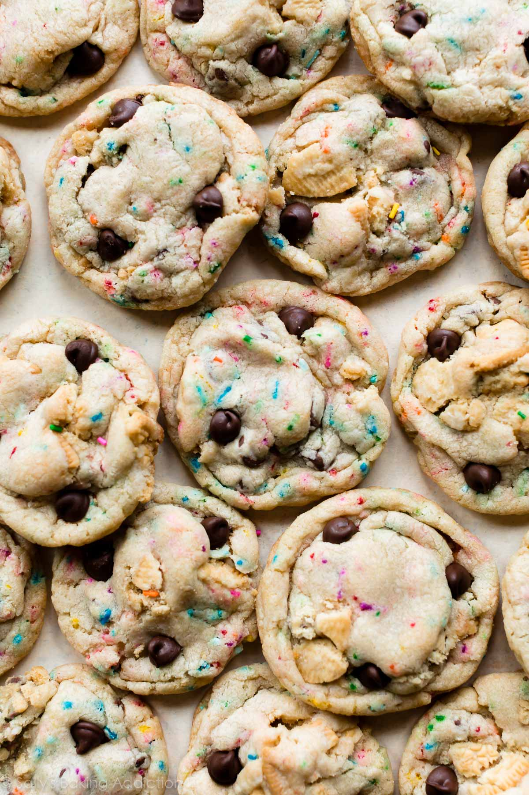

Cake Batter Oreo Cookies
Soft-baked and ultra chewy cake batter Oreo cookies are a delicious variation of my classic cake batter chocolate chip cookies. They are the ultimate sugar rush—loaded with chocolate chips, sprinkles, Oreos, and cake batter flavor
The only thing better than a cookie is a cookie in another cookie. With sprinkles.

Ingredients You Need
- 1 and ¼ cups (156g) all-purpose flour(spooned & leveled)
- 1 and ¼ cups (190g) yellow or vanilla boxed cake mix (I typically use vanilla cake mix)
- ½ teaspoon baking soda
- ½ teaspoon salt
- ¾ cup (12 Tbsp; 170g) unsalted butter, softened to room temperature
- ½ cup (100g) granulated sugar
- ½ cup (100g) packed light brown sugar
- 1 egg, at room temperature
- 1 and ½ teaspoons pure vanilla extract
- ⅔ cup (180g) semi-sweet chocolate chips
- ½ cup (80g) sprinkles
- 1 and ¼ cups chopped Oreos (110g, about 10 whole Oreos)*
Overview: How to Make Cake Batter Oreo Cookies
- In a large bowl, sift together flour, cake mix, baking soda, and salt. Set aside.
- Using a hand mixer or a stand mixer fitted with paddle attachment, cream the softened butter and both sugars together on medium speed until smooth. Add the egg and mix on high until combined, about 1 minute. Scrape down the sides and bottom of the bowl as needed. Add the vanilla and beat on high until combined. Add the flour mixture to the wet ingredients and mix on low-medium speed until just combined. Add the chocolate chips, sprinkles, and crushed Oreos. Mix on low until the add-ins are evenly dispersed.
- Cover tightly with plastic wrap and refrigerate dough for at least 2 hours, or up to 3 days. This step is mandatory. The dough is fairly sticky, so chilling the dough is required in order to avoid the cookies from spreading too much. If you chill longer than 2 hours, make sure you roll the cookie dough into balls after the 2 hour mark. Place dough balls on a plate, cover tightly, and store in the refrigerator until ready to bake.
- Once chilled, preheat the oven to 350°F (177°C). Line two large cookie sheets with parchment paper or silicone baking mats.
- Scoop rounded balls of the cold dough onto an ungreased baking sheet. Use about 2 Tablespoons of cookie dough per cookie. Shape your cookie dough balls to be “taller” than they are wide, as explained and pictured in my cake batter chocolate chip cookies recipe. Press a few chocolate chips or crushed Oreo pieces into the tops of the cookie dough balls, if desired. That makes a pretty cookie. Make sure to keep dough chilled when working in batches.
- Bake the cookies for 10-12 minutes until edges are slightly browned. Mine took exactly 10 minutes. The centers will still appear very soft, but the cookies will set as they cool. You may also press a few more chips into the tops of the cookies at this point (the chips will melt down and stick from the warm cookies).
- Allow the cookies to cool on the baking sheet for 4 minutes and transfer to a wire rack to cool completely.
Notes
Make Ahead & Freezing Instructions: Cookies stay fresh covered at room temperature for up to 1 week. Baked cookies freeze well—up to three months. Unbaked cookie dough balls freeze well—up to three months. Bake frozen cookie dough balls for an extra minute, no need to thaw.
Oreos: Use the entire sandwich cookie including the cream filling. Feel free to use any flavor Oreo you like, including Double-Stuf.
To view the original published recipe, vist sallysbakingaddiction